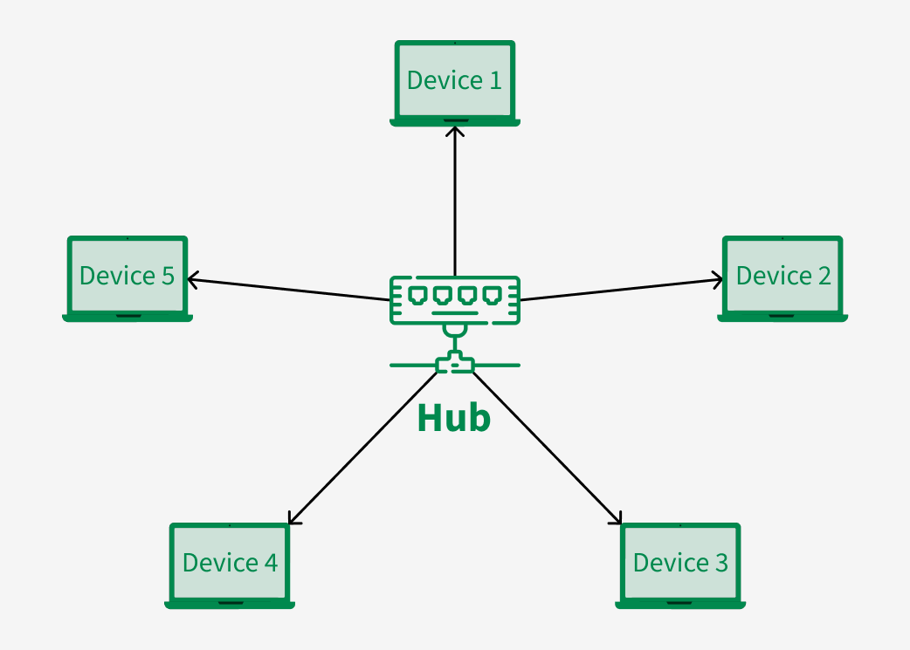
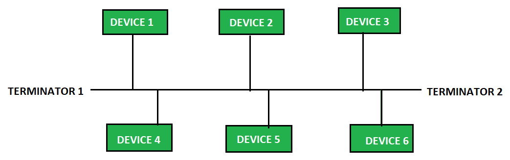
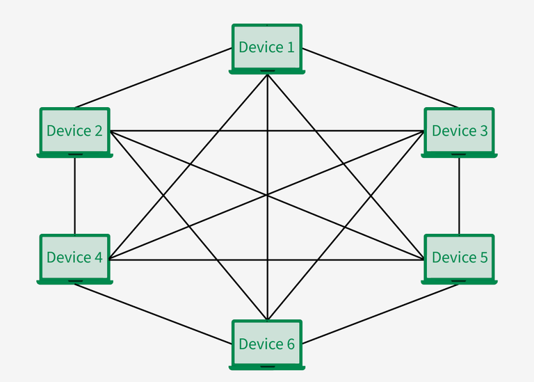

Network
Networks are categorized by their geographic extent. The three most important are:
- LAN (Local Area Network): Local network
- WAN (Wide Area Network): Connects LANs across large distances. The internet is the world's largest WAN
- VLAN (Virtual LAN): Logical groups inside a physical LAN. Increases the security and reduces unnecessary data traffic
OSI Model
The Open Systems Interconnection (OSI) model describes how data is transfered from an application on system A to an application on system B.
| Layer | Name | Function | Protocol / Hardware |
|---|---|---|---|
| 7 | Application | Interface to the software (Browser, mail client) | HTTP, HTTPS, FTP, SMTP |
| 6 | Presentation | Encryption, compression, data formatting | SSL/TLS |
| 5 | Session | Establishing, managing and dismantling connections | NetBios, RPC |
| 4 | Transport | End-to-end data transfer | TCP, UDP |
| 3 | Network | Logical addressing and routing | IPv4, IPv6, ICMP |
| 2 | Data Link | Physical addressing, error detection on cable | MAC-address, ethernet, switch |
| 1 | Physical | Physical component | Copper cable, WLAN, hub |
Topologies
Star topology
All devices are connected to a central point (switch). Advantage: If one cable fails, it only affects one device. This is the current standard in LANs.

Bus topology
All devices are connected to one main cable.

Mesh topology
Every device is connected to every other device. Advantage: Maximum reliability (redundancy). Disadvantage: Very expensive and complex. Often used in WANs or with critical core routers.

Hardware
- Switch (Layer 2): It connects devices within a LAN. It remembers the MAC addresses of the connected devices and forwards data packets (frames) only to the specific port containing the target device.
- Router (Layer 3): It connects different networks (e.g., your LAN to the internet). It works with IP addresses and decides which path a data packet must take.
- Firewall: Monitors incoming and outgoing traffic based on established safety rules.
TCP vs. UDP
| Attribute | TCP (Transmission Control Protocol) | UDP (User Datagram Protocol) |
|---|---|---|
| Reliability | High: checks if data is being received | Low |
| Connection establishment | 3-Way-Handshake (SYN, SYN-ACK, ACK) | None |
| Speed | Slower | Very fast |
| User cases | Websites, E-Mail, file transfer | Video streaming, online gaming, VoIP |
MAC, IP & Ports
A data packet needs three pieces of information to arrive at exactly the right application:
- MAC-Address: The physical, unique hardware address of the network card
- IP-Address: The logical address
- Port: The "door" to the actual application on a server
The "Big Three" protocols: DHCP, DNS, ARP
- DHCP (Dynamic Host Configuration Protocol): It automatically assigns IP addresses to new devices on the network. Without DHCP, you would have to manually assign an IP address to each smartphone and laptop.
- DNS (Domain Name System): Translates human-readable names (like google.com) into IP addresses (142.250.185.110) that computers understand.
- ARP (Address Resolution Protocol): The translator between Layer 3 and Layer 2. When a computer knows an IP address, it uses ARP to broadcast across the LAN: "Which MAC address belongs to this IP?"
Subnetting
Subnetworks are created to divide large networks into small, isolated spaces.
We do this for three reasons:
- Performance: Reduction of the "broadcast domains" (less unnecessary data clutter on the network).
- Security A firewall can be placed between the subnetworks.
- Tidiness: IP addresses are logically grouped by department or location.